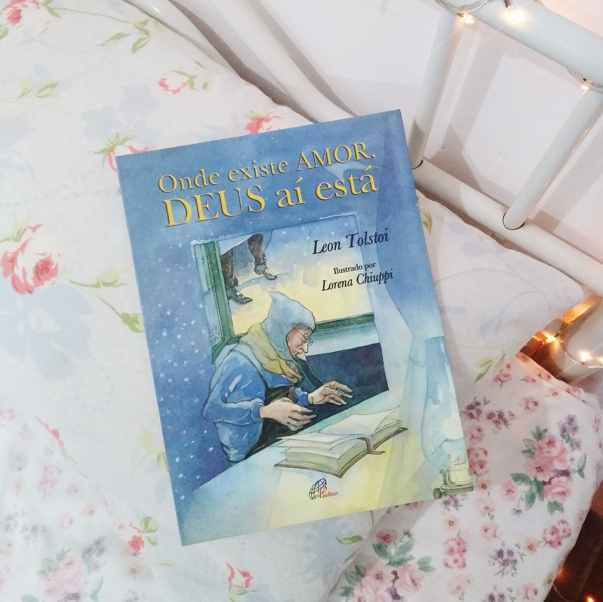

Página inicial
Dicas de leitura
Membros
Anne De Green Gables
A princesinha
Em algum lugar nas estrelas
Fahrenheit 451
Flores para Algernon
Heidi
Pollyanna
O despertar da Senhorita Prim
O Jardim Secreto
Onde existe amor, Deus aí está

O Rei da Cidade Dourada